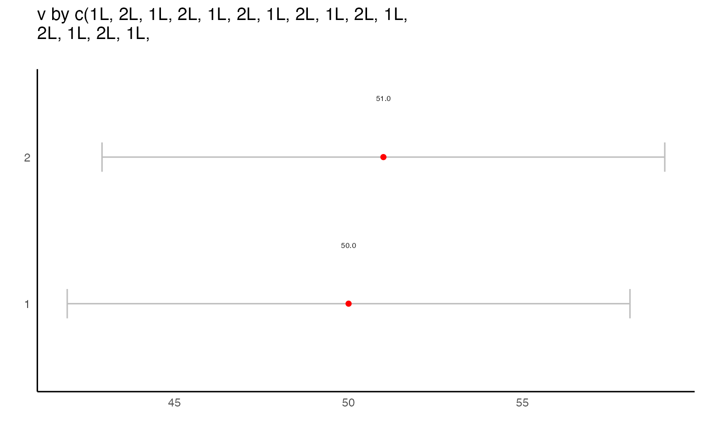

Returns ggplot of means by group with 95
Variable to aggregate.
Group variable. If length is 1, assumes it's a variable name in the `data`
Character vector of groups make bold.
"print" or "caption"
"means", "ridges", "heat"
Whether or not attempt to extract value labels. TRUE by default.
Optional, used only if `X` or `group` have length 1.
d<-data.frame(v=1:100, group=rep(1:2, 50))
graph_means_ci(d$v, d$group)
#> Warning: Vectorized input to `element_text()` is not officially supported.
#> ℹ Results may be unexpected or may change in future versions of ggplot2.
with(d, graph_means_ci(v, group))
#> Warning: Vectorized input to `element_text()` is not officially supported.
#> ℹ Results may be unexpected or may change in future versions of ggplot2.
